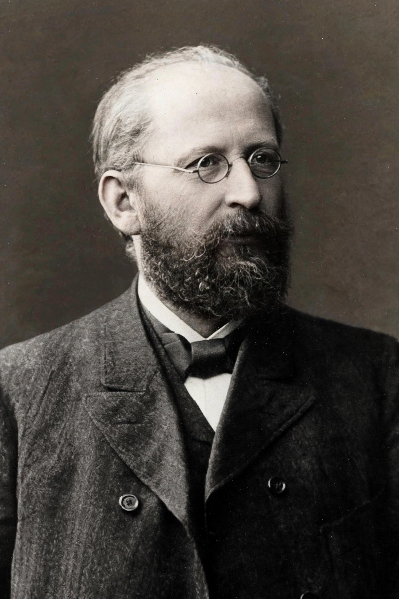

| Revisionism (Marxism) | |
|---|---|
| Key figure | Eduard Bernstein |
| Key text | The Preconditions of Socialism (1899) |
| Opponents | Rosa Luxemburg, Karl Kautsky, Vladimir Lenin |
| Outcome | Foundation of democratic socialism / social democracy |
In Marxist terminology, revisionism is the revision of orthodox Marxist theory on central points — above all the abandonment of the necessity of revolution and the dictatorship of the proletariat in favor of gradual, democratic reform. The term was first used by opponents of Eduard Bernstein to condemn his proposals as a betrayal of Marxism, though Bernstein's ideas later became the basis of modern social democracy.
In articles published in the 1890s and in his book The Preconditions of Socialism (1899, also published in English as Evolutionary Socialism), the German social democrat Eduard Bernstein argued that capitalism was not collapsing as Marx had predicted: the middle classes were not disappearing, wealth was not concentrating as catastrophically as expected, and cartels and credit made crises manageable. Bernstein concluded that socialism would be achieved through parliamentary democracy, trade-union action, and incremental reform rather than revolution. His famous dictum held that "the movement is everything, the final goal is nothing."
Bernstein's challenge ignited a major debate in the German Social Democratic Party (SPD) and the Second International. Rosa Luxemburg answered him in Reform or Revolution (1900), arguing that reforms were only a means and that abandoning the revolutionary goal would dissolve the socialist movement. Karl Kautsky, the leading orthodox theorist, also attacked Bernstein, and SPD congresses formally condemned revisionism — while in practice the party's daily work increasingly followed Bernstein's reformist path.
After 1917, "revisionism" became a standard polemical charge within communist movements: Lenin and later Stalinists applied it to any deviation from their interpretation of Marxism-Leninism. Yugoslavia under Tito, Hungary under Kádár, and above all China under Deng Xiaoping were denounced as "revisionist" by Maoists, while the Soviet Union after Khrushchev was attacked by Beijing in the Sino-Soviet split as the headquarters of "modern revisionism."
See also: Social democracy, Marxism, Reformism